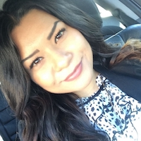
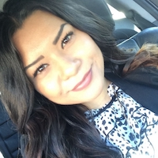
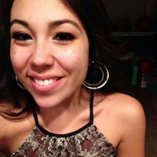
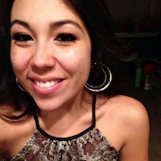
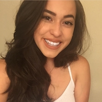
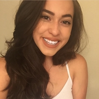

MORE
MORE
2016
Her side: I am a control freak when it comes to planning our trips, so when Alberto said he was planning a nice dinner for one night in Santorini, Greece I immediately asked what restaurant and what do I need to wear. He played it off so smooth even with the million and one questions. Fast forward to the day of, Alberto had disappeared and left me in the lobby of the hotel/restaurant. For some reason, I started to get butterflies as the woman told me to follow her through the caved doorways, but then I saw flower petals on the ground and wondered who they were for. She proceeded to walk me to the staircase and I slowly made my way down trying to keep it cool, but that’s when I saw him, standing there (handsome as ever-I may add) in this beautiful scenic spot. Me, being the awkward person I am, tried to make a joke that he wasn’t there to walk me down the stairs in these heels, he sheepishly laughed and said “it’s cause I was right here baby”. Then I lost it, I cried the entire time, even as I told myself that there is a photographer and to play it cool and just smile. I could not hold back the tears of joy, as I knew without a doubt that I wanted to spend the rest of my life with this man. We spent the rest of the night eating dinner and just talking about our future, our goals, and the wedding. I cannot wait to marry this man and have the wedding of our dreams.
close


Meet The Party


 

 



 



Nathalie BelloMaid of Honor
Nathalie has been in my life for the last four years and we have so much memories together. We’ve laughed, cried, almost got into some fights on sixth, and so much more. We are so much alike, sometimes almost too much lol. I will never be able to just say what my favorite memory is with her, but some of my favorite memories were just laying on the beds and just talking for hours. We’ve been there for all major events in our lives and I cannot wait to share in many more with you. I love you daughter, thanks for always putting up with me!
closeAudrey SanchezBridesmaid
I remember first hanging out with Audrey at her apartment and just sitting on her bed and talking for HOURS. We seriously have so much in common- our families are pretty much the same, we dress the same (sneaks but can also rock heels), and share our love for the sorority. And now us getting married just a few months apart! Next thing you know, we’ll probably be having little baby Audreys and Mirandas around the same time lol. I’ve always looked to her as a role model and am so thankful for all of her guidance and support. Love you and can’t wait to share in your special day and mine!
closeDestinee GarciaBridesmaid, sister of the bride
Dest is the second oldest of all of the siblings and has been with me on this journey of life the longest. It holds true – no one can replace the bond that siblings have. We may argue and fight, but we will always be there for one another. Thank you for being a part of my special day sis, I love you. Oh and thank you for all of the spa days as a child lol. I can’t wait till our future children have the same memories together.
closeIvette GarzonBridesmaid
I remember first meeting Ivette and thinking how much I wanted to join the sorority after meeting her. She would always be one of the sisters to reach out to me and make sure that I was joining and provide motivation along the way. We had so much in common from rockin sneakers and can’t forget about our hoop earrings ;) She has always been one of the most amazing friends and one of the few people I can call and know that she’ll be there in a heartbeat! They always say to surround yourself with likeminded individuals who share the same goals and ambitions, which is why I consider Ivette such as great friend. Thanks for everything, love you!
closeJereny GutiérrezBridesmaid
Have you ever met someone who is just a genuinely good person? Well if you haven’t, you are missing a Jereny in your life. I’ve only known her for a few years, but she has been one of my number one supporters and is always there to listen to me vent and give me that extra push when I need it. I love her ambition, self-drive, and her to ability to use her ~assertive voice~ then be the kindest person in the room in a matter of minutes. I love you girl, thanks for everything! #ChingonasForLife
closeKassandra ChavezBridesmaid
To be a woman with balance, you have to have people in your life who bring out a different, but the best side of you. That is what my Gamma Daughter Kass brings for me - she is the seriously the sweetest and kindest woman you will ever meet. I am so happy that the sorority brought you into my life and that you get to be a part of my special day. P.S. Do you realize in the short time we have known each other we’ve gone through car breakdowns, car lockouts, car tows, etc.? lol Somehow we always end up in these situations but I love how we always make the most out of it and if anything it only strengthens our bond. I cannot wait to continue to make more memories with you! I love you daughter!
closeLaura GodinezBridesmaid, future sister-in-law
Ya know, I did not really need an extra sister (I already have 4 + 1 step sister), but I’m honestly blessed to consider Laura a little sister. I have seen her grow up from this little violinist in middle school to a woman taking on challenges like no other. She has fought through adversity to make her family and me proud, and be the strong independent woman she is today. Not many 20 year olds can take on a completely new state for an internship, but you did. If I do not tell you enough, I’m beyond proud of you Laura and I’m proud to call you my sister-in-law. I cannot wait to see all the adventures life takes you on. P.S. thanks for taking me to meet Casey ;)
closePriscilla VelasquezBridesmaid, step-sister of the bride
Priscilla and I have been in eachother’s life since she was in diapers and writing on the walls. My favorite memories include us at the beach, going to moody gardens and the Rain Forest Café. Also, the fact that every vacation our parents would always get drunk and act a fool, and we’re just sitting there like “do we really know these people”. Haha. Even though we are not related by blood, I’ve always considered you a little sister and someone that I really care about. I’m excited to have you by my side as I begin this new stage in life, love you!
closeAlex RuizGroomsman, Future brother-in-law
closeDaniel Ray YbarraGroomsman
closeGarrett DuranGroomsman
closeHenry SanchezGroomsman
closeThalina RuizJunior Bridesmaid, sister of the bride
Sometimes I wonder where this girl gets her attitude and then I remember
that Thalina is a mixture of all my sisters and I. She has our attitude and
our sass, but most importantly I know that she has the same drive as me
(sometimes she just needs a little nudge kick in the right direction). She
may not show it all the time, but she is always willing to help her sisters
and be there to take care of us. As she gets older, I cannot help to be proud
of the young woman she has become. I’m so excited to have you be apart of
our special day, I love you sister!
Cienna RuizJunior Bridesmaid, sister of the bride
It’s hard to believe that Alberto has been in my life since my littlest sister, Cienna, was in pre-k. She would always be so excited to see us at her award ceremonies and just having elementary school lunches together. Now my littlest sister is going off to middle school and will be a junior bridesmaid in our wedding. I cannot wait to have you by my side sister, I love you so much and cannot wait to continue to watch you grow into a beautiful young woman.
closeJazzmine GarciaSister of the bride
Jazzy aka my second background singer on our Barbie karaoke machine. LOL My favorite and most distinct memories are of Jazzy, Destinee, and I singing in our room on this karaoke machine. I was always so bossy that I would be the lead singer and had them as backups. Haha. On a serious note, Jazzmine is definitely the sweetest of all of my siblings, she has the kindest heart and is always there for all of us. I’m so happy that you are Noah’s mommy, you were always the mommy of the group and I know you will raise Noah right. I cannot wait for our future children to grow up together and have the most amazing relationships.
closeWedding Details
Location
The ceremony will be held outdoors at Hayes Hallow in Spring Branch, Texas. Attire is formal, please arrive 15 minutes earlier.
Get DirectionsWhere to stay
We have reserved rooms at Best Western (under Miranda Ochoa or Alberto Godinez) with a free shuttle service to and from the reception. The hotel is about a 30 minute drive from the venue. Shuttles depart from the hotel at 3:15pm.
View The HotelCeremony Begins
4:00 PM
Cocktail Hour
4:30 PM
Dinner
6:00 PM
Party Starts
7:35 PM
Drive Safe
11:00 PM
Registry
More than anything we consider your presence to our present (We mean it!). That said, if you would really like to give us something, we are registered at Bed Bath and Beyond and Zola.
ü•Å *drumroll*
We’re going to Bali! If you would like to contribute to our adventures, please feel free to use Zola to donate directly to our honeymoon funds.

Made with love in Austin,